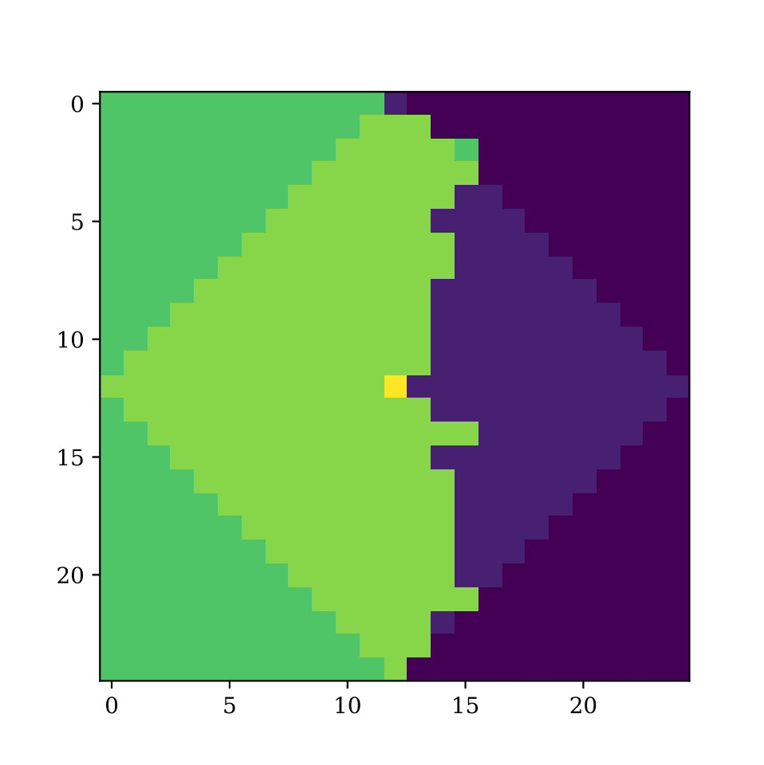

As part of my Bachelor thesis, I generated models that simulate dominant mutations in a replicating enviroment. The main question was at which conditions a dominant mutation could take over the whole population. The report about the project can be viewed here.
Simulation
Statistical Physics
Julia Coding
The Eden growth model is a computational model that simulates the growth of a cluster or pattern in a discrete space, such as a grid. It starts with a seed cell and adds neighboring cells randomly until a stopping condition is met. In the context of tumor growth, the Eden model can be used to study the expansion of tumor cells in a tissue. By considering the tumor as a growing cluster, the model makes it possible to explore factors influencing tumor growth, such as cell proliferation and migration.
To learn more about the model, I tried to predict how likely a benefitial mutation is going to survive, depending at which position it is emerging.
To predict the chances of a mutations survival, we need to look at the tumor surface, which can vary locally due to roughness and can significantly influence the spread of new mutations. I introduces two quantitative measures: the number of free lattice points in the vicinity of a mutation (Nw) and the deviation of the mutation's radius from the average radius of cells in its region (∆R). My analysis explores the correlation between these measures and the number of mutations on the surface, the effect of the chosen region size, the influence of surface roughness, and the survival probabilities of mutations based on these measures over time intervals.
Above we see the the frontier of a growing tumor. A new mutation (yellow) has emerged and is now in competition with the surrounding tissue (green). The probability of its survival depends on its position relative to its nearest neighbours (brighter square). Nw calculates the free latticepoints around the new mutation. ∆R compares how far back the mutation is compared to its neighbours.
As a result of my research, I comfirmed that it is indeed possible to make a prediction about the survival of a mutation, as it is seen in the figures below.


import numpy as np
import matplotlib.pyplot as plt
import matplotlib.animation as animation
def generate_eden(size, num_iterations):
grid = np.zeros((size, size), dtype=int)
center = (size // 2, size // 2)
grid[center] = 1
for _ in range(num_iterations):
# Find all filled cells
filled_cells = np.argwhere(grid == 1)
# Select a random filled cell
index = np.random.randint(len(filled_cells))
i, j = filled_cells[index]
# Select a random empty neighbor
empty_neighbors = []
for dx in [-1, 0, 1]:
for dy in [-1, 0, 1]:
if (dx == 0 and dy == 0) or i+dx < 0 or i+dx >= size or j+dy < 0 or j+dy >= size:
continue
if grid[i+dx, j+dy] == 0:
empty_neighbors.append((i+dx, j+dy))
if empty_neighbors:
# Randomly select an empty neighbor
neighbor = empty_neighbors[np.random.randint(len(empty_neighbors))]
grid[neighbor] = 1
return grid
# Parameters
grid_size = 100
iterations = 100
# Generate enden tumor
plt.imshow(generate_eden(grid_size, iterations))